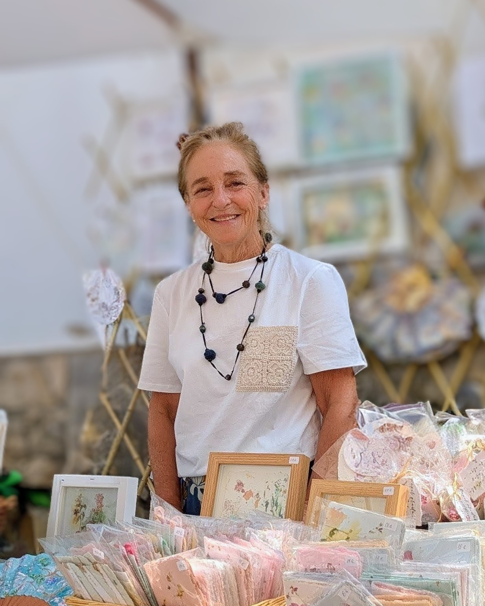

Bienvenidos
Desde el papel, con cariño

Soy Belén Carretero, artista y creadora especializada en papelería artesanal. Este es un espacio donde el papel, el tiempo y el cuidado se unen para dar forma a piezas únicas, pensadas para acompañar momentos importantes. Te invito a recorrer mi universo creativo y descubrir cómo, a través del trabajo manual y el diálogo, cada proyecto se transforma en algo especial.